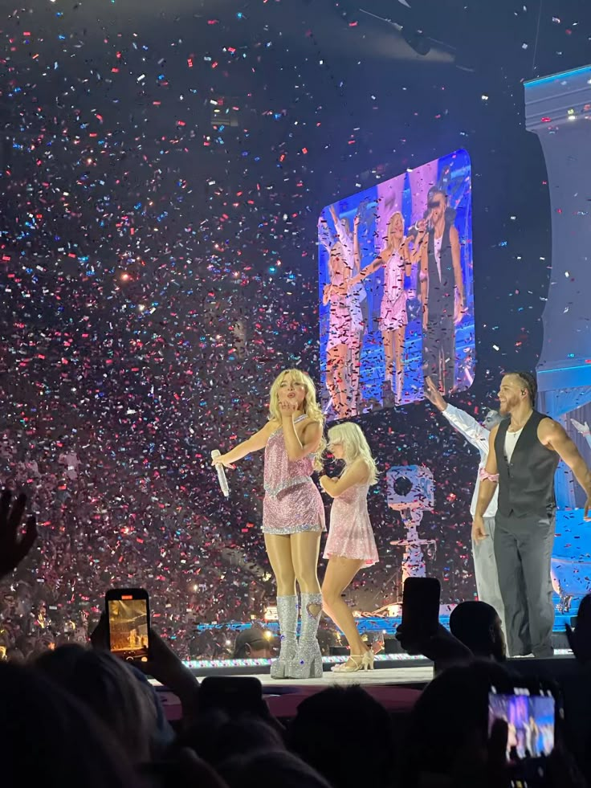
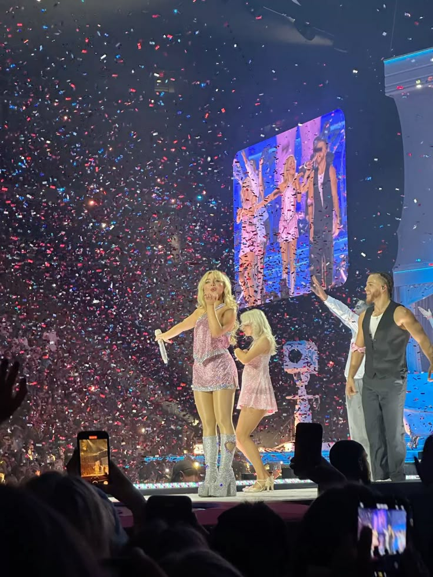
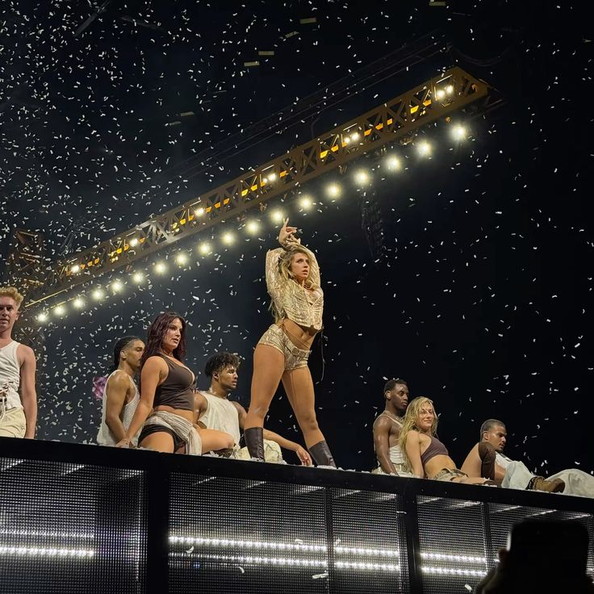
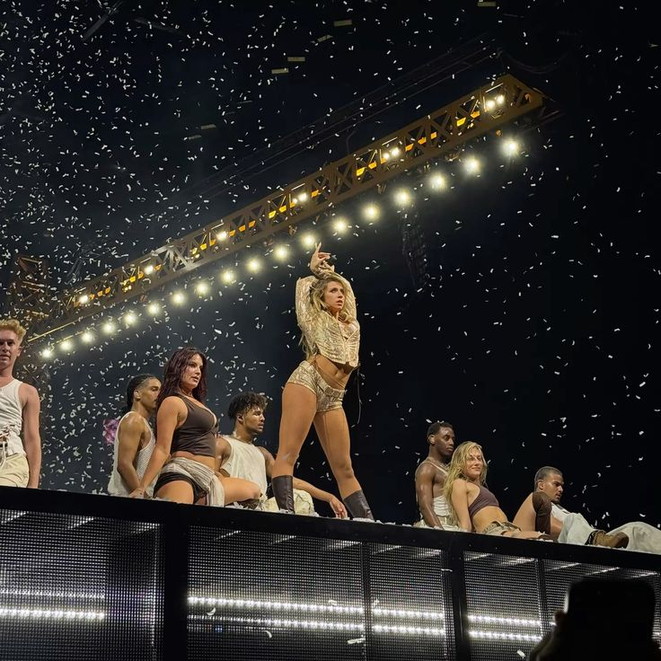

.png)
Siempre que me pongo a escuchar música, elijo a mis favoritas del pop. Ciertas veces me parece que suenan igual, otras no. Veo las portadas de sus álbumes; hay unas que parecen escenas de una película, mientras que otras utilizan sus propias caras y cuerpos para transmitir directamente la vibra del conjunto. Leo las letras en mi app de música, y algunas cantan sobre querer disfrutar su juventud, pero otras de la misma edad hablan de un corazón roto. Cómo puede ser que, siendo tan distintas, todas sean extremadamente famosas dentro del género.
 

 

El pop es uno de los estilos musicales más populares en el mundo. Este posee una gran capacidad de infiltrarse en las emociones colectivas. Dicha capacidad es alcanzada a través de los y las artistas que construyen piezas dentro del género. Una gran mayoría de estas figuras son mujeres que, a lo largo del tiempo, han formado una ola de suma influencia y se han convertido en las líderes del género. Pero detrás del brillo y la parafernalia que envuelve a estas artistas hay algo que me inquieta ¿Qué las conecta más allá del mercado y las tendencias?